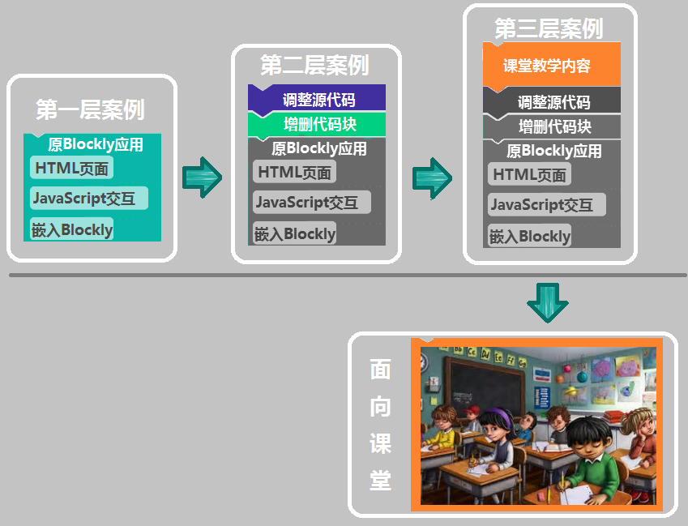
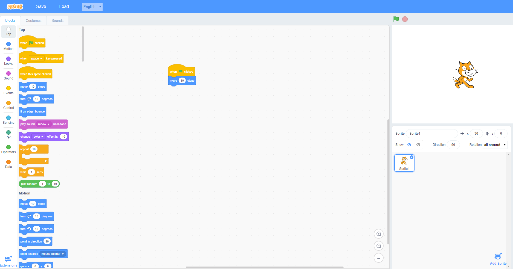

Blockly案例征集
Blockly和Scratch Blocks作为功能强大、扩展性强的可视化编程工具，拥有着为今后信息技术教育和跨学科教学做出贡献的非凡潜力。Blockly核心功能虽然强大，却不支持多媒体和图形化的交互界面；Scratch Blocks是Blockly和Scratch的结合产物，作为可视化编程工具的新成员，它虽然弥补了Blockly结果显示单一的缺点，但是尚未能继承Blockly代码转换的功能。
通过对Blockly和Scratch Blocks进行教学案例开发，结合二者各自的优势，推动它们的进一步发展，进而吸引更多的使用者加入到案例开发中来，让不同年龄层的学生都能从中受益，共同打造Blockly和Scratch Blocks在教育领域内开发、学习、交流、协作的良好生态系统。
现发起Blockly和Scratch Blocks教学案例征集活动，无论您从事何种学科教学，无论您是否有编程基础，只要您有好的想法、建议或需求，您都可以参与到活动中来。我们将会提供完善的文档和工具，帮助您实现您的想法。

我们所征集的案例分为3类，
第一类：在现有 Blockly及各子环境（如blockly-games）的基础上，结合您教学学科的知识点、生活小常识、有趣的故事等进行案例的设计，这一类案例直接运用于课堂教学，请您发挥想象力，让它们尽量生动、有创意、新鲜、有趣；
了解更多 »
第二类：在某个具体的Blockly环境下，向其中添加模块，将您设计的模块提供给我们，并进行目的、功能的描述。
了解更多 »
第三类：Blockly环境开发，如果您有想法来开发一个新的Blockly小环境，类似blockly-games中的各种小游戏，如迷宫、拼图、乌龟之类的案例，希望您将您的想法或作品分享给大家。
了解更多 »
针对第二类、第三类案例，如果您精力或时间有限，您也可以只给我们提供需求和想法，将您渴望的功能告诉我们，由我们来进行设计实现。
此外，除了Blockly教学案例，您还可以提交基于Scratch Blocks设计的教学案例。

了解更多 »
我们会仔细研究您所提交的案例，积极采纳您所提出的建议，经过我们的筛选之后，
如果您的案例、模块、二次开发或者您的想法被选入案例库，谷歌公司会提供相应的荣誉和奖励。
为了 Blockly 的明天，为了让更多一线教师和学生更好的利用如此强大的工具，我们诚挚的希望得到您帮助与支持！
星星之火，可以燎原，也许您的一个思维的火花，可能点燃中国信息技术教育变革的熊熊大火。
加入我们